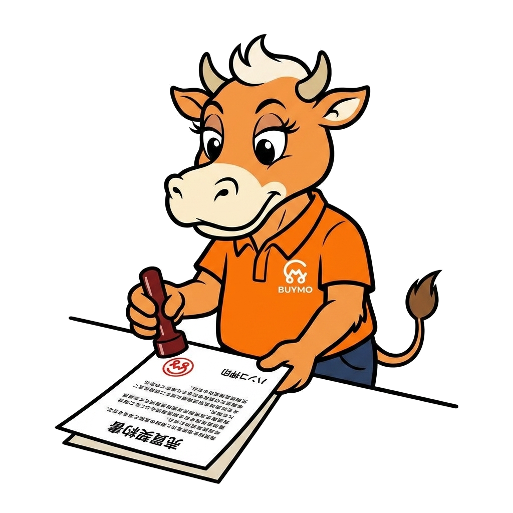

書類発行・ダウンロード

案件情報から各種書類をA4サイズで自動印字できます。外部機関の様式リンクも掲載しています。
売買契約書（買取用）
車両の買取に関する売買契約書。A4×2枚（甲乙各1通）。事業者情報・車両情報・金額・特約条項を含む標準書式。
委任状
移転登録・廃車手続等を代理で行うための委任状。移転登録用・抹消登録用の2種。
譲渡証明書
車両を譲渡したことを証明する書面。国土交通省様式に準拠した内容で発行します。
清算書（オークション/直販）
本部への手数料計算を含む加盟店向け清算書。案件の売却情報から自動計算します。
所有権解除依頼書
ローン残債が残っている場合にディーラー・金融機関へ提出する所有権解除依頼書。
💰 過誤納還付金（自動車税）— 都道府県窓口一覧
廃車・移転後の月割還付。申請先は旧住所地の都道府県税事務所です。各都道府県の様式・申請方法リンクを掲載しています。
| 都道府県 | 担当窓口 | 電話 | 公式様式・案内 |
|---|
🚗 自賠責保険 — 全国問い合わせ先
廃車時の自賠責保険料還付（未経過分）は加入保険会社へ直接申請します。代表的な窓口を掲載しています。
| 保険会社 | 電話 | 受付時間 | 備考 |
|---|